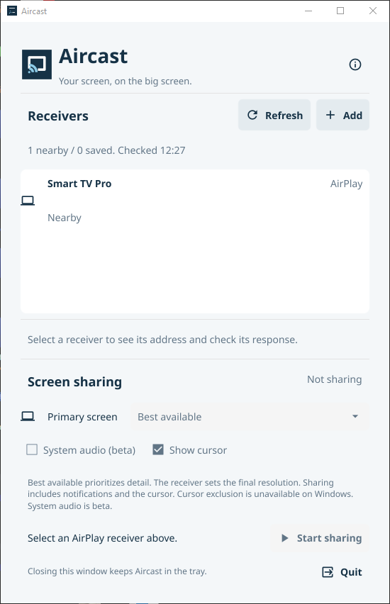

Finds what is already there
Real mDNS discovery for AirPlay video, AirPlay audio and Google Cast receivers. Refreshes every 25 seconds, keeps saved addresses, and lets you add a device by IP or hostname when multicast is blocked.
v0.1.0 public beta
Aircast sends your Windows or Linux desktop to an AirPlay receiver — a TV, an Apple TV, a projector — over the network you already have. No account, no cloud relay, no dongle.
Windows 10/11 x64 · Linux X11 · GPL-3.0 · 1080p30 H.264

Living room TV · 1080p
Real mDNS discovery for AirPlay video, AirPlay audio and Google Cast receivers. Refreshes every 25 seconds, keeps saved addresses, and lets you add a device by IP or hostname when multicast is blocked.
PIN or password pairing against the receiver, then a local H.264 stream it controls. Start, stop and reconnect from one panel. Cursor sharing is on and required; system audio is optional and off by default.
No account, telemetry, cloud service or remote-control listener. Saved addresses are just addresses — they are not claims that a device was reachable before.
Aircast negotiates what the receiver can show, keeps the desktop aspect ratio honest, and treats clean text as the bar — not a 4K badge. Windows captures the primary display through DXGI with a GDI fallback; Linux uses X11.
Windows encoding is quality-first and capped at 1080p30 in this beta. SDR only. HDR, 4K and lossless-text claims are not part of this release.
Run the setup and launch Aircast from the Start menu. It installs for your user, needs no administrator rights, and includes the FFmpeg build the engine uses.
Download setup.exePrefer a portable copy? Take the zip and keep ffmpeg.exe beside aircast-engine.exe.
The tarball contains the panel, the casting engine and the CLI. Check the checksum, then run install.sh to put everything under ~/.local.
curl -fsSLO https://github.com/4nkitd/aircast/releases/download/v0.1.0/aircast-0.1.0-linux-amd64.tar.gz
curl -fsSLO https://github.com/4nkitd/aircast/releases/download/v0.1.0/SHA256SUMS
sha256sum -c --ignore-missing SHA256SUMS
tar -xzf aircast-0.1.0-linux-amd64.tar.gz
./aircast-0.1.0-linux-amd64/install.shGNOME needs a StatusNotifier/AppIndicator extension for the tray. Wayland has a portal path, but only X11 was exercised.